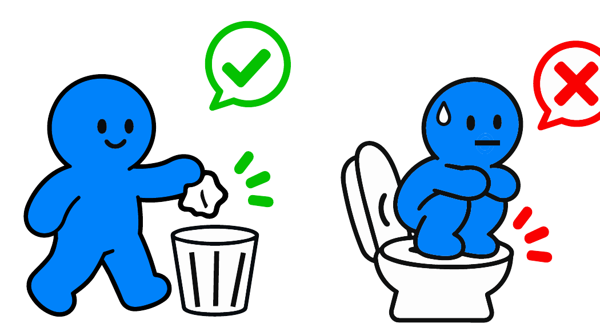
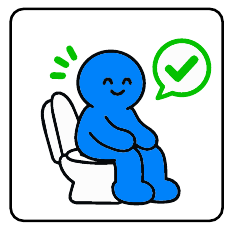

‘유도형·금지형 사인 비교’로 출발한 기획은 캐릭터와 표현을 다듬어
권유형 1차, 금지형 2차의 실험이 되었다
유도형·금지형 사인 비교
더 효과적인 안내 방식을 찾는 실험으로 출발
두 어조 × 두 길이
두 어조 모두 1컷·3컷 효과를 비교하는 틀
파도말랑·물안개몽 → BI 캐릭터
인천 바다 모티프 캐릭터를 사회실험 BI 기반으로 교체
권장·금지 행동의 구분
권유형에서 금지 표시를 지우고 캐릭터 행동을 바꿈
권유형 1차 · 금지형 2차
같은 3개소·3주제·문항 · 차수별 참여자 50명
1차 · 2차 각 1일
11.5(목) 권유형, 11.6(금) 금지형 · 당일 수집
사업 방향을 정리하던 단계에서 차이나타운 거점은 ‘그림으로 이해되는 공중화장실 에티켓’이라는 이름으로, 유도형·금지형 사인을 비교해 더 효과적인 안내 방식을 찾는 실험으로 소개되었다. 무엇을 붙일지는 처음부터 정해져 있었고, 질문은 어떤 어조로 말할 것인가에 있었다. 화장실이라는 장소와 그림이라는 수단은 기획 내내 바뀌지 않았다.
거점별 실험을 한 표로 묶은 실험 요약에서 이 거점의 해법은 권유형·금지형 픽토그램의 1컷·3컷 효과 비교로 정리되었다. 한 장면짜리 단일형(1컷)과 세 장면을 잇는 연속형(3컷)을 두 어조 모두에서 비교하는 틀은 이때 이미 갖추어졌다. 차수 안에서는 길이를, 차수 사이에서는 어조를 비교하는 두 겹의 구조다.
2차 부서검토에서 캐릭터가 바뀌었다. 처음 그림은 인천 바다의 파도와 물안개를 모티프로 한 ‘파도말랑’과 ‘물안개몽’이었다. 검토 의견에 따라 사회실험의 취지와 공공디자인의 목적에 맞는 사회실험 BI 기반 캐릭터로 교체하였고, 올바른 휴지 처리와 변기 이용 행태를 이 캐릭터와 픽토그램으로 그렸다. 색은 다섯 가지로 묶어 먼셀 기호를 붙였다.
제1회 공공디자인위원회 심의에서는 권장 행동과 금지 행동이 한눈에 구분되도록 그림을 간결하게 고치라는 의견이 나왔다. 권유형 그림에 남아 있던 금지 표시를 지우고 캐릭터의 행동을 바꾸어, 권유형에는 체크만, 금지형에는 원형·사선만 남겼다. 한 장에 두 어조가 섞이면 비교 자체가 흐려지기 때문이다.
실행계획에서 1차는 권유형, 2차는 금지형으로 짜였다. 관람은 변기·휴지·소변기 세 주제의 세 쌍으로 구성하였다. 두 차수는 같은 세 곳의 화장실과 같은 부착면, 같은 문항과 척도를 썼고, 차수마다 별도의 참여자 50명을 모집해 중복 참여를 막았다. 1차는 11월 5일(목), 2차는 11월 6일(금)에 하루씩 운영하였다. 그림은 조사 전에 붙이고 조사가 끝나면 떼어, 하룻밤을 넘겨 남겨 두지 않았다.

파도말랑 · 물안개몽인천 바다의 파도·물안개 모티프

사회실험 BI 캐릭터행동과 결과를 보여 주는 주 캐릭터
금지 표시 공존
두 어조가 한 장에권장·금지 행동 구분이 흐림

체크만 / 원형·사선만차수마다 한 어조
협의
화장실 안 부착 허용제물포문화재단 · 개항동행정복지센터
밖에서 답함
화장실 밖 설문11.5 권유형 · 11.6 금지형 같은 방식
사인의 종류를 고르는 질문
이해와 경각심이 어디서 갈리는지 묻는 질문